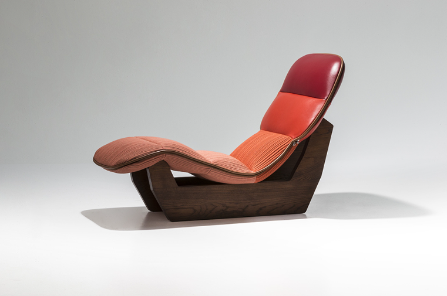
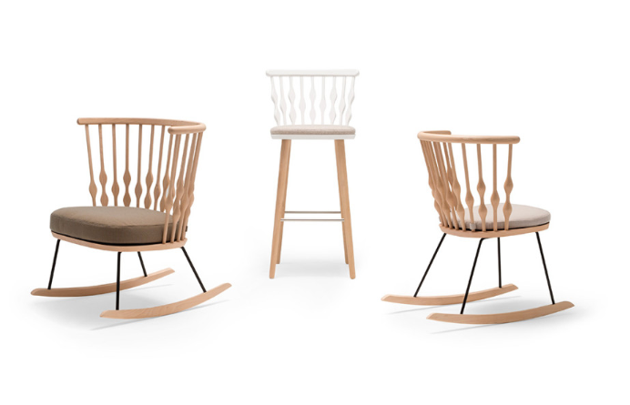
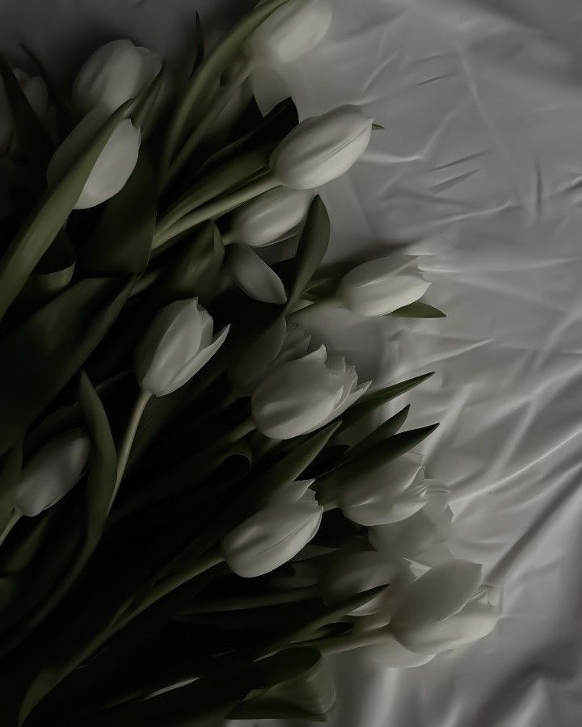
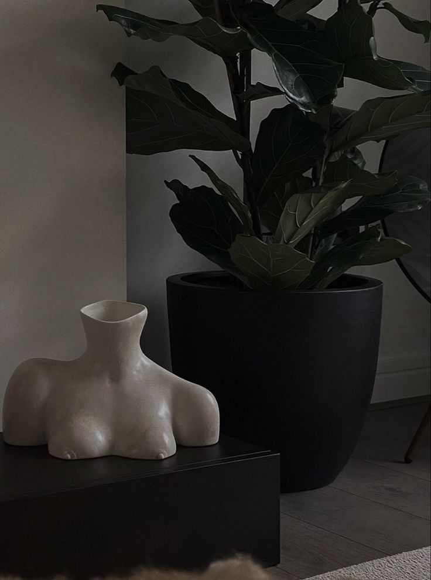
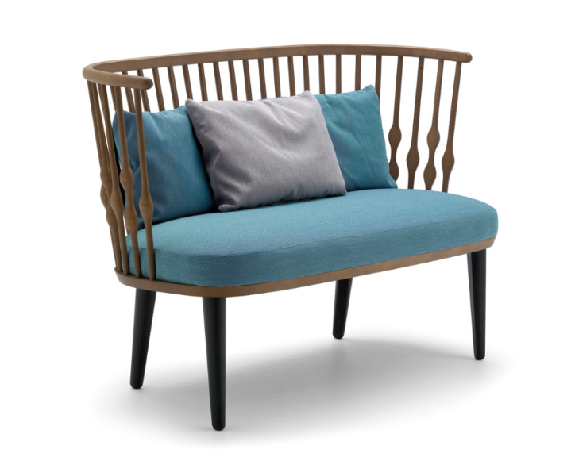
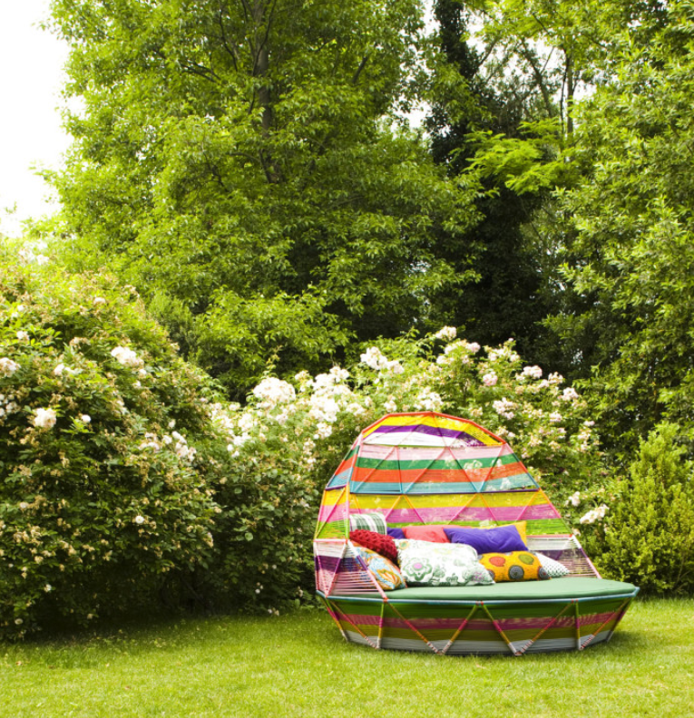
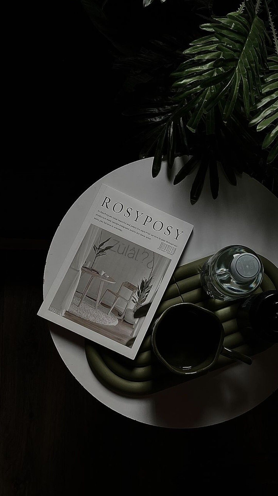
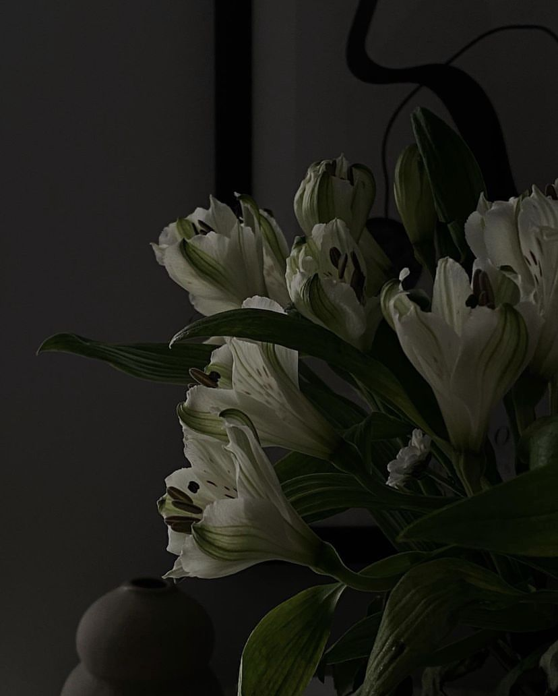

Iconic Works
This page presents a selection of Patricia Urquiola’s iconic furniture designs, showing her unique approach to form, comfort, and creativity. Each piece reflects her ability to mix soft shapes, modular ideas, and modern materials, creating furniture that feels both artistic and functional. The collection highlights how her designs transform everyday seating into expressive and timeless interior pieces.















